中秋去了趟西安。回来后立马上班，也没来得及整理。趁着十一放假，理一理。
遵循读万卷书，行万里路的古训。一直想使自己多出去走走。但总是由各种原因，未能如愿。对于这次去西安，实在是难得的机会。赵工作一直很忙，经常加班。好不容易遇到双休，也累的哪儿都不想去。只能宅在家里。
这次正好遇到赵工作不顺心，本想辞职，好好调整一下。公司没准辞职，倒是给了个长假。我正好这段时间工作不是很忙。所以才有了出去一趟的想法。当然，牺牲了和家人团聚的机会。
对于为什么选西安。主要有两方面的原因，一个是我正在读大秦帝国，想了解下秦的历史。另一方面，西安有很多小吃，这对赵来说很有吸引力。再加上有一个共同喜欢的歌手叫许巍，爱屋及乌，对西安充满了好感。当然，原因肯定不止这些。
到了西安，一下火车，在出站的甬道两侧，就是宣传山西文化和风土人情的大幅宣传海报。其中，那广袤粗犷的黄土地给我留下了深刻的印象。
出了火车站，迎面而来的就是古朴厚重的古城墙。令人惊叹不已，仿佛一下穿越到了古代。在往前走，一路的古建筑，处处透露出西安悠久的历史。
习惯性的，认为地铁和火车站应该在一起。可找了半天，愣是没有看到。查了下地图，发现有一段距离。这从一个侧面反应了西安的基础建设和沿海发达城市还有一定差距。后几天的出行也验证了这一看法。
西安一共开了两条地铁。车厢还算宽，人不是很多。这是第一印象。后面发现，我们刚去的点是早上八九点，避开了人流高峰期。其实还是很挤的，游人很多。还有不少国际友人。
从钟楼广场一角出了地铁，广场的室外咖啡馆上，一中年老男人唱着纯正的秦腔。放眼望去是漂亮的鼓楼。这一切给西安打下了深刻的烙印。让我感觉西安拥有自己的特色，这一趟注定不会白来。
穿过一条古巷，到达鼓楼，右手边就是大名鼎鼎的回民街。和武汉的户部巷不同，除了忙碌的门面伙计。游客不多。简直有点冷清。暗自庆幸自己选对了时间。后面证明庆幸的早了点。回民街刚刚睡醒，马上就赢来了一天的喧嚣。
等到我们将行李寄存到酒店，再次出来的时候，游人已经渐渐多了起来。坐了一晚上的火车，就是为了早上到回民街后这顿美美的早餐。找了一家面馆，要了一碗面和混沌。
第一天（西安古城墙、钟楼、鼓楼、回民街）
西安古城墙
吃过早餐，正式开始第一天的游玩。顺着小巷，一路向西，边走边逛，不知不觉已到大路。查了一下去古城墙的路，发现很近，于是决定步行过去。没走一会儿，古城墙已经远远的映入眼帘。
在古城墙下的一家KFC喝了点饮料，补充点能量，稍事休息，准备好相机，向古城墙入口走去。入口人不多，看了下介绍，买了票进去。这是城墙的的四大门之一，安定门。
从门洞进去，到入口，首先看到的是城门，还有放在旁边的大门栓，其实就是一条粗横梁。以前只在电视里看到，没什么感觉，实际看到的更显宏伟。过了入口就是瓮城。一下让我想到了玄武门政变。不过后来了解到，玄武门是大明宫城中的一个门。
西安古城墙为明代所建，和唐大明宫不在一起。
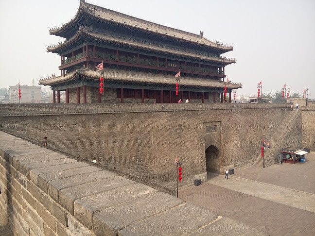
看完了瓮城，沿阶梯上了城墙。城墙很宽，大体相当于四车道的路。发现有很多人在上面骑自行车。走了一段路看到了一个自行车租赁点。考虑到十三四公里的长度，还是决定租辆自行车。
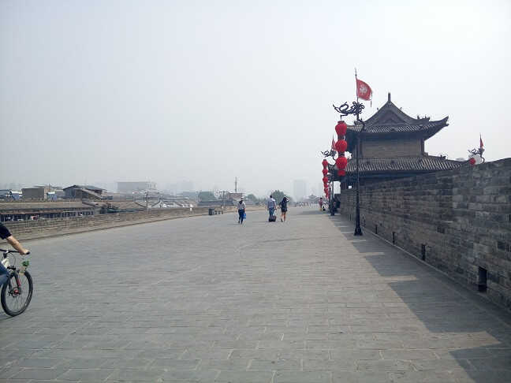
由于很久没骑自行车了，再加上是在古城墙上，看着西安称的建筑和街道，别有一番滋味。走走停停，看看风景，拍拍照。过了一个多小时，看到了一个城门和一个还车点。原以为已经回到了起点。还了车以后才发现，其实我们才走了一半的路程。到达了永宁门。
接着下了城墙，一路向北去钟楼。越靠近钟楼，人渐渐多了起来。到了钟楼，发现人很多，和我们早上刚到西安时的景象形成了鲜明的对比。
钟楼
排队买了票进入钟楼。钟楼里面有一个小型的摄影展，都是介绍山西旅游景点的美景的。其实我最感兴趣的是大钟。听说钟楼的顶楼有一个很大的钟，于是就迫不及待的爬了上去。上去后发现空空如也。顿感失望，心里不停的犯嘀咕，大钟呢。找了一圈，确认了没有钟，才从不同方向看了看西安的风景。
和现代的高楼大厦相比，钟楼还是太矮，所以基本没什么惊艳的。下了楼，准备离开的时候，意外的在钟楼的一角上发现了传说中的大钟，不过也没想象中的大。不管怎样，算是满足了最初的愿望。在楼下，买了钟鼓楼的纪念币。
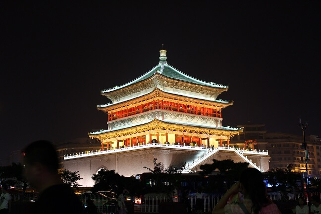
鼓楼
出了钟楼，向鼓楼走去。有了钟楼的经验，只是远远的看了下。就没有买票进去。右拐进入回民街，发现人已经很多，熙熙攘攘的。边走边看，找了一家看上去还不错的馆子，点了西安比较知名的凉皮，羊肉串和羊肉泡馍。准备美美的享受一餐。
餐上来后，迫不及待的准备尝一下。但多少有些失望。凉皮的量很少，加的酱很浓，一点都不爽口。羊肉泡馍，除了羊肉比较正宗，味道也一般。羊肉串是用红柳木串着烤的，但也没感觉出和铁签的区别，并且非常辣。总体比较起来，比不上上海的西贝。特别是赵失望之极，以至于后几天再没尝试回民街其它吃的。
吃完饭，已经是下午四五点。回酒店休息了下。晚上六点，重新外出。一方面想买张相机用的SD卡，另一方面感受一下钟鼓楼的夜景。
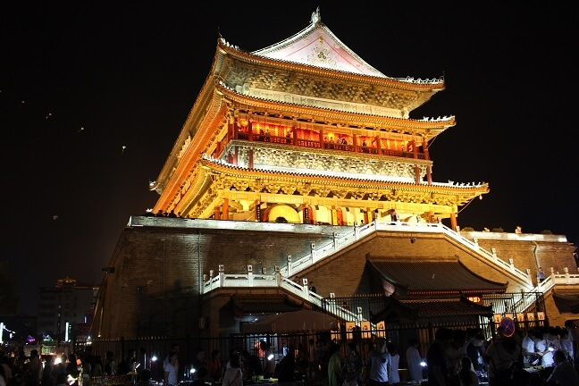
回民街
晚上的回民街热闹非凡，游人达到顶峰。面铺的伙计表演加叫卖，有的做拉面的，有着拎着大锤做花生糖，还有站在高台上剖羊肉，引得游客围观拍照。再看灯光下金碧辉煌的钟鼓楼，人的心情顿时兴奋起来。叫人忍不住爱上西安。
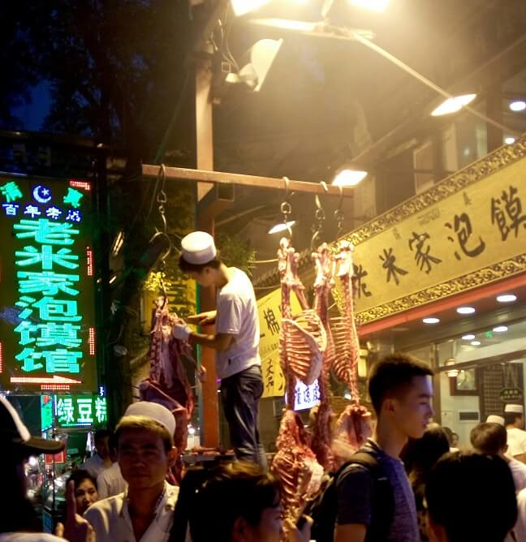
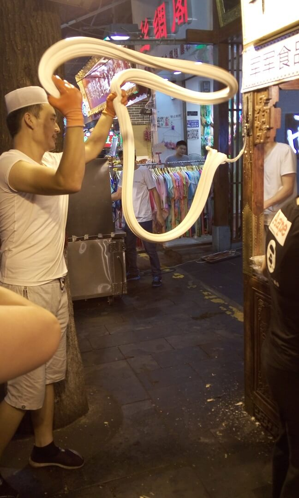
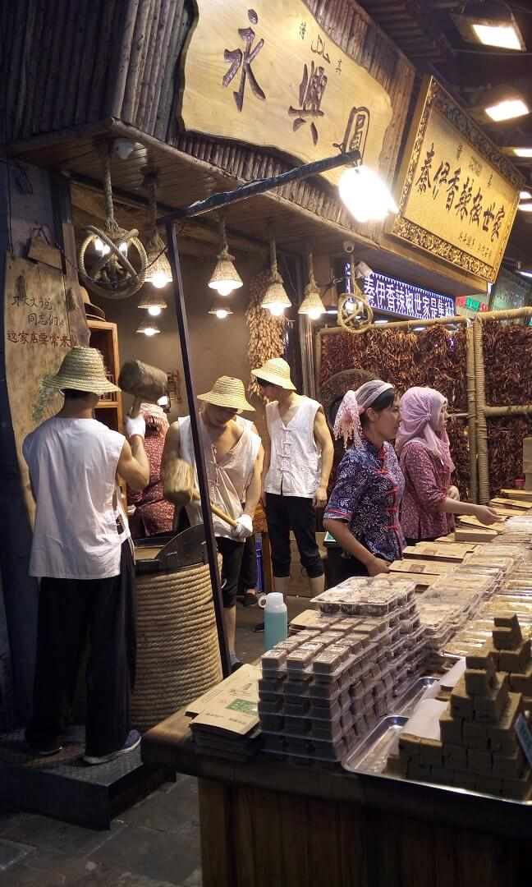
和外面的热闹非凡不同，晚上钟楼附近的商场却冷冷清清，跑了几个地方，终于买到了SD卡。也体验好了西安的夜景，打道回府，结束了第一天的游玩。
第二天（兵马俑、华清池）
兵马俑
早上早早起床，坐地铁，转公交，直奔兵马俑。刚上公交买票的时候，车上的售票员问是只去兵马俑还是还要去华清池。当时没太明白是什么意思，还以为坐了黑车，跟我们耍花花肠子。所以就说去兵马俑，后面的还没安排。根据实际情况再说。
后来身边的大姐给解释了才搞明白，原来售票小伙的意思是，华清池在兵马俑的前一站。如果既要去华清池又要去兵马俑，可以先买票去华清池，然后再去兵马俑。由于兵马俑是终点站，这样可以保证返程时好坐车。
不得不说是我以小人之心度君子之腹了，惭愧。冤枉陕西人民了。在此深表歉意。因为来之前曾经做过功课，在网上查过，不少网友说，去兵马俑的交通不便，有很多黑车，要小心。所以才谨慎过头了。
这也导致了赵对我的不满。因为，售票小伙问话后她有点动摇，被我不友好的制止了。一路上都没怎么跟我说话。一副不开心的样子。
一路上的印象是，有山有沟渠洼地。延边的房屋也比较破。有大片大片的石榴林。快到华清池的时候，情况明显好转。房屋整齐漂亮起来。像一个小县城。禁不住想，应该是被兵马俑和华清池这两个景点带动起来的。路上还上了一个类似导游的人，给车上的人介绍了当地的景点和特色。不少人到了华清池就下车了，好像是跟着导游走的。当然，我怀疑导游提前上车应该是为了招揽生意。只是妄猜，不知道是不是又犯了买票时的错误。
我都有点后悔没有听取售票员的意见了，会不会真的等回的时候坐不上车。可想想，早点去兵马俑，等转回华清池的时候应该人还不是很多。应该不会太糟，也就坦然了。
到了兵马俑站终点站下车。搜了下地图，朝入口走去。到入口处，一个中年男人过来搭讪，问需不需要坐车。我们摆摆手示意不需要。可他仍紧跟着不放，跟着我们到入口处的地图旁。跟我们说兵马俑离那儿还有好几公里的路程。他们是旅游局的工作人员，还出示了自己的证件。说是我们花个小钱，他将我们拉进去。
这基本上就可以断定是个骗子了。我们没有理他，沿路标的指示走去。发现入口售票处就在百十米的地方。再想想刚才的中年男人，着实可恶。这一点给我留下了很差的印象。
入口处已经有很多人了，买了票进去。有好几处建筑，我最想看的就是一号坑。想趁着人少，先看一号坑。等人多了就不好看了。可又不知道哪个建筑才是一号坑。于是逆人流而动，选了一个人少的建筑。后来发现原来那是文物陈列厅，有点失误。看下图，横匾上其实有提示。但当时比较着急，也没有细看。回家看照片才发现，上面写的是“秦始皇帝陵文物陈列厅”。还真别说，这字体真难认。
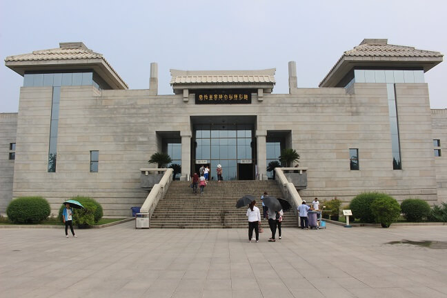
里边基本以介绍秦皇陵的发现、发掘过程和保护为主。匆匆浏览一遍，拍了几张照片。就跑出去找一号坑了。当时的想法是，先看一号坑。等看完了再回过头来看这些。
出去后到邻近的展馆。由于看不懂横匾上的字，所以像无头的苍蝇乱撞。实际上那不是一号坑，是三号。刚进三号坑的时候还是有点小震撼的。坑的规模很大，还有不少的陶俑碎片。
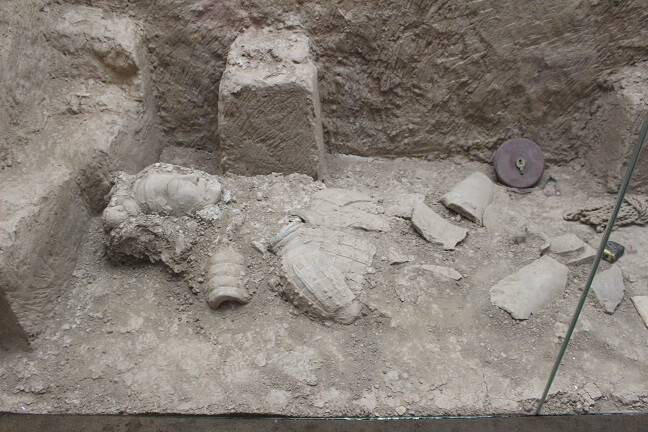
一下子拉近了历史和现实的距离。让人联想到当年始皇帝的勃勃雄心和当年兵马俑工地成千上万人辛苦劳作的场景。如今却是物是人非啊。也一遍遍的在想，如此英明的一代帝王，为什么要做这么规模宏大但劳民伤财的面子工程。倘若没有建造骊山墓，没有修建兵马俑。秦帝国会不会避免二世而亡。但又觉得，用现代的思想去套古人，似乎有点滑稽可笑。
出了三号坑，凭着感觉走，都到了二号坑。坑比较小，但有完整的陶俑。见下图，我想问的是，他们的头都去哪儿了？
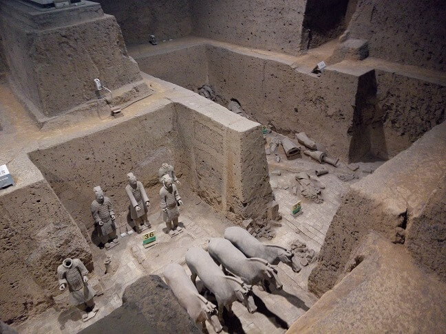
这是第一次见到真正意义上的陶俑。和小时候在庙里看到的泥胎有点像。但看上去更结实、细腻、有质感。这个时候，游客已经很多了。在视角比较好的位置上已经有很多人，于是我开始担心一号坑的情况。
二号坑花了没多少时间就走完了。出去开始找一号坑。饶了半圈找到了入口。进去一看果真到处是人。特别是入口处，由于正面陶俑。很多人聚集在那儿不肯离去。我看了一下应该没有希望走到前边去了。看看两边的人相对较少。就往里边走去。找到了一个离陶俑比较近的位置。细细端详了一下，发现做的很精细，面部表情栩栩如生，并且高低、胖瘦各不相同。再想想这是两千年前的作品，还是让人惊叹的。
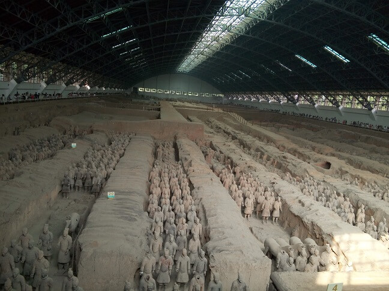
总的来说，规模没有我想象的惊人，但由于这只是其中的一部分。整个的规模相信还是令人震惊的。工艺和创作令人惊叹。我很好奇，这是如何做到的。听说当时始皇帝是汇聚了天下的能工巧匠来做这件事的。那么就蕴含了我们今天经常提到的匠人精神。
所以我在想，如果当时的匠人精神加上今天的科学技术，是不是可以创造出更惊人的奇迹。
中间还有一个小插曲，值得记录一下。我走着的时候，不经意的看到，一个中年妇女。好像是单独一个人，还请了一个导游。导游是个年轻小伙子。在给她讲解兵马俑的发现过程。中年妇女不经意的听着。突然打断问，这是哪个皇帝来着？小伙子略显尴尬，说是秦始皇。中年妇女也很尴尬，带着歉意说，不好意思啊，我真不太了解。
之所以说这件事情，没别的意思。就是觉得，对于一个游览兵马俑的人来说，竟然不知道秦始皇。这样的反差对我的冲击太大了。所以我觉得值得记下来。我很庆幸随着经济的发展，越来越多的人能够走出来了解外边的世界。但我也很痛心，精神落后于物质如此之多。
我希望这位大姐是真心的想了解和这些文物相关的历史。而不是啪啪拍几张照拿出去跟人吹牛。我希望越来越多的人能够了解历史。
出了一号坑，还惦记着刚到的时候匆匆浏览过的文物展示厅。准备再去看一下，赵已经累得走不动了。就在展厅外边的座位上休息了下。赵不准备看了，于是决定在座位上等我，我一个人进去。进去后，有了之前的浏览，已经大致知道了里面都有些什么东西。考虑到赵在外面等着，就只瞅着感兴趣的看。发现了下面这个。
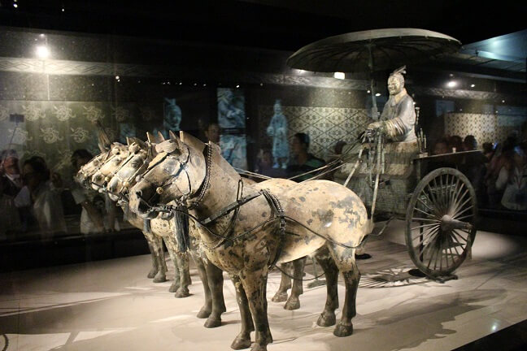
这是一个出土的很漂亮的铜车马。实物远比照片精美。算是额外的惊喜。
出了兵马俑，说是有免费的车去秦皇陵，但听说就是圈起来的一块地，没有发掘，没什么看头。再加上想去华清池，于是决定放弃。
在外边找到了路过华清池的车，向华清池进发。
华清池
要加快速度了。写的太慢，国庆假期马上要过去一半了。
到了华清池，赵怕坐不上回去的车，迟疑了下，到底要不要下车。有些时候，在通往目标的路上，不能瞻前顾后，畏首畏尾。在我的劝说下，还是下了车。不过，车上的应该大多是先到的华清池，再去的兵马俑。因为没几个人下车。
华清池在路对过。远远望去，有一座山，进去后才知道叫骊山。山不高，葱葱郁郁，依山建了很多建筑。建筑很漂亮。应该是赵喜欢的，从兵马俑蔫的状态一下精神了很多。
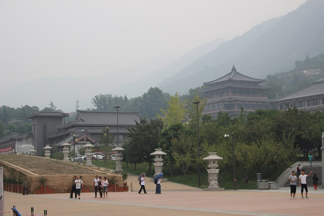
找到入口，有唐明皇和杨玉环翩翩起舞的塑像。很高大，周围是奏乐的宫廷乐师。让人一下子感受到大唐盛世时人的那股精气神儿。拍了几张照片，找到售票处。买了票进去。
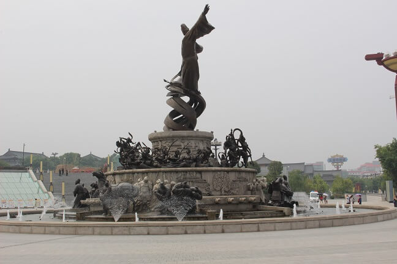
里边人不多，漫无目的的在里边走着。环境优美，心情还算舒畅。里边有温泉，水很清，温度在四十度左右。还看了唐朝皇帝和皇子、大臣等泡温泉的遗址。
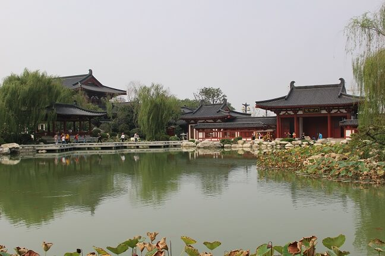
还看了西安事变的遗址。老蒋攘外必先安内，敦促当时驻扎陕西的张学良、杨虎城部剿共。否则，就让他们退出陕西，由中央军来剿。没成想被张学良和杨虎城扣留。当时，蒋介石就住在华清池。
历史课本里说是西安西边和平解决。给我留下了和平的印象。原本以为西安事变发生的应该比较温和。看了老蒋住的地方才知道当年事态有多严重。听说老蒋带领的三十多个随从死了二十来个。住处的墙壁上还有不少当年留下的弹痕。
找了下当年的捉蒋亭，后改名为兵谏亭。但没有找到。好像在靠山上的位置，但好像上面是玩滑索的，就没有上去。还了解到，当年周幽王烽火戏诸侯也是在这儿。
还有女娲补天的传说。没想到一个小小的华清池，竟有这么多故事。
第三天（陕西历史博物馆）
早上睡到自然醒。起床洗漱后，想历史博物馆进发。
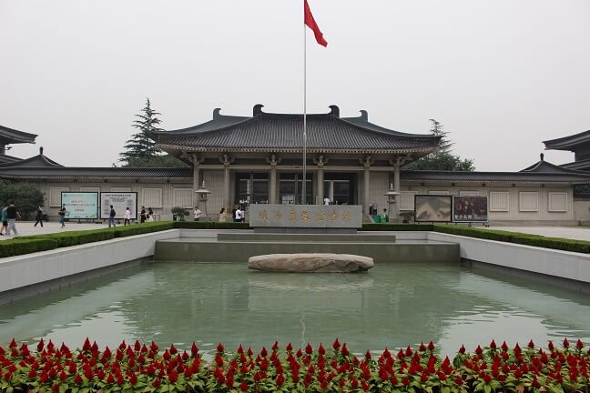
几个展馆，主要讲述了商周秦汉唐的历史。因为在这几个历史阶段，陕西占据着举足轻重的地位。所以文物也比较多。其中令我印象深刻的是上古时期的骨针。打磨的十分精细，非常漂亮。
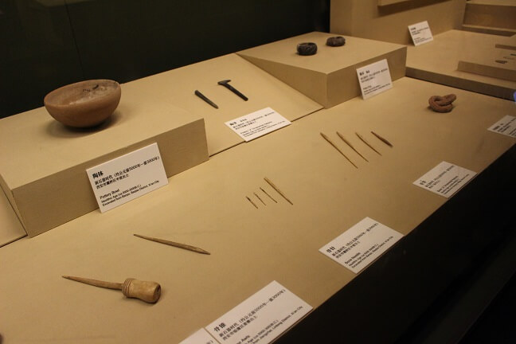
商周的青铜器。厚重、精美、大气。
第四天（大雁塔）
早上醒来，赵的烧已经退了，看上去状态不错。也有食欲了，想要吃粥。搜了一下，离住处两三公里处有一家粥店。洗漱完毕，准备去碰碰运气。
外面下着小雨，回民街已经开始了新的一天的喧嚣。走了好一会儿，才找到了那家粥店。店面不大，一开始竟然没看到，走过了。但装修很精致。里面的服务员是个很慈祥的大妈。如沐春风。最主要的是，有赵想吃的粥。
吃完饭，赵的状态还可以，雨下的也不大。决定去大雁塔。在去乘车站牌的路上，赵顺道买了条裤子。店里两个女店主，估计看我们不是本地人。赵穿的比较单薄，天就有点冷。于是狮子大开口。最后被赵拦腰砍断拿了下来。
坐上公交后，就随意的看着外边的风景。由于下雨，路上有一段稍微有点堵。迷糊中，发现大雁塔应该到了，匆忙中跳下了公交车。仔细看看看手机，才发现下车早了。但远远望去，已经看到大雁塔的身影，于是决定走过去。走的路上有一段正在施工，绕了个大圈到了大雁塔北广场。看到了号称亚洲最大的音乐喷泉。遗憾的是由于晚上九点才有喷泉演出，所以没有看到。
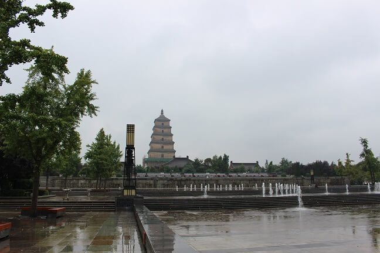
绕着大慈恩寺外围找入口，顺便拍了几张照片。到了正门口，发现没钱买票，于是开始找ATM。好在不是很远。返回后买了票进去。进门正面是大雄宝殿，里面有一个很大的释迦穆尼佛像。金碧辉煌，很是耀眼。除了大雄宝殿，还有好几个其它的殿。游人不是很多。进去看了看，有游客在烧香拜佛。多是和佛教相关的东西。了解的不是很多，所以没什么感觉。大雁塔在大雄宝殿后面，买了登塔的票，在塔中看到了舍利，贝叶经。登到塔顶看了看西安的风景。
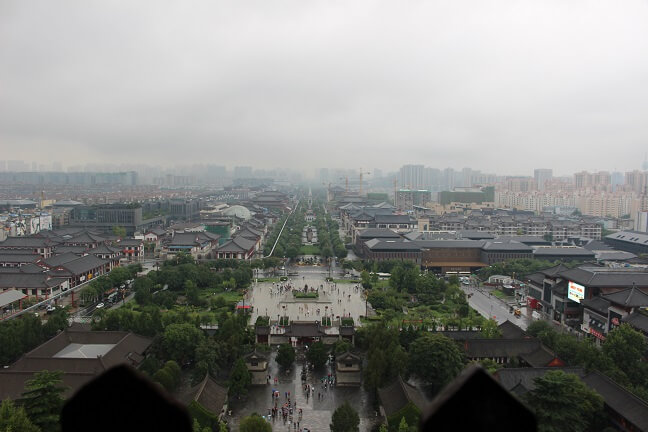
下塔后，先在玄奘三藏院隔壁的座位上坐了坐，休息下，避了避雨。然后到玄奘三藏院，看到了玄奘相关的浮雕，了解了下玄奘的出生、成长和取经的历史。接着从侧边的小路外出，由于下着小雨，游客也不多，显得格外清幽。感觉很好，还随手拍了几张照片。
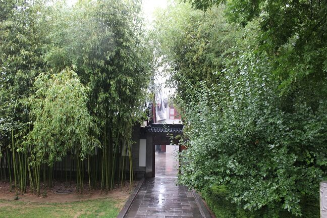
出门后看到一个很高大的雕像。有不少人在忙着跟雕像合影。走进看了下，是玄奘法师。大慈恩寺和大雁塔的主人公。当初大雁塔的修建就是为了存放玄奘法师取回的经书和舍利的。
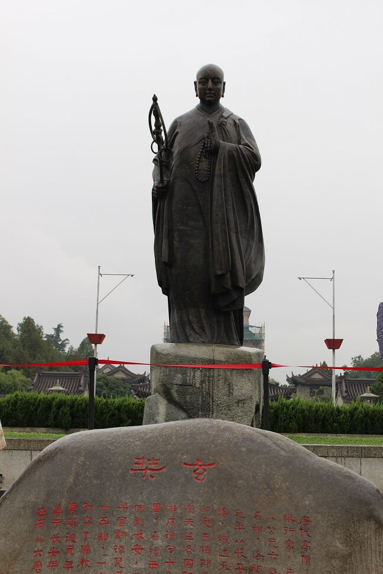
然后到kfc休整了下，打道回府。在转地铁的时候，旁边一个中年男人，卡刷不了。口中念念有词，怎么刷不了。我也没太在意，刷了卡出去。隐隐约感觉后面有一个人。扭头一看，原来是中年男人。他趁我将闸门刷开的一刹那，跟在我后边出了站。
这已经是我在西安短短四天时间里遇到的第二次。我在怀疑他们应该是在逃票。这给我留下了很不好的印象。回到回民街，忘掉前两天的不快。尝了一下看上去比较诱人的桂花糕，真心不好吃。回民街真的要令我失望了。
第五天（大明宫）
计划最后一天到大明宫，主要是因为它离火车站近。步行就可以到，这样就可以将行李寄存到火车站。坐车时间也可以把控。
早上起来，发现赵的嗓子还是难受。洗漱完毕，去附近的药店买了治嗓子和晕车的药。回来的时候看到老白家的肉夹馍摊子前人不是很多。看了看又都是瘦肉，决定买一个作为早餐。不成想一排队就排了半个多小时。做肉夹馍的小伙不紧不慢。好像排队的人跟他没关系似的。
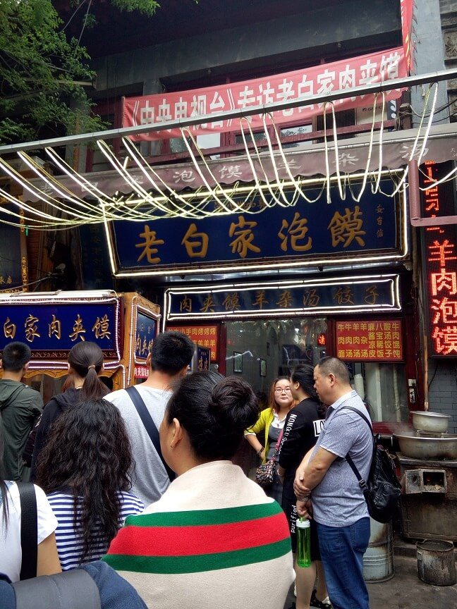
这难不成就是老白家的肉夹馍受欢迎的原因？在如此嘈杂喧嚣的环境中，依然我行我素。不被环境所左右，做好自己该做的。这和回民街其它家形成了鲜明的对比。
买回去后，赵已洗漱完毕。一起吃了肉夹馍，味道确实比上一家要好许多。也比在上海那家陕西西安的要好吃。随后，赵吃了药。收拾好东西，退了房准备到火车站。下了楼在对面给同事买了点花生糖。
在鼓楼下的特产店买了包酥。买单的时候，旁边一小伙热情的说，可以到旁边领小礼品。旁边一女士招待我们。给了个红绳手镯，然后说还可以抓奖。
抓奖的时候还暗示说，一般都是谢谢光临。我刮开一看是一等奖。那女士故作惊讶状，说，一等奖？很难得的。我说奖品是什么。女士说，他们家的所有商品打一折。我一听就知道是个骗子。看了下她们的商品标价，一普通的玉都上万。
随便瞅了两眼，打了个哈哈，就离开了。又一个骗子。
到了火车站，寄存了下行李，找了家李先生，吃了碗面，喝了个橙汁。开始去大明宫。本想坐公交去，在打听坐什么车的时候，一个老大爷说，大明宫很近。火车站那边有个地下通道，两分钟就到了。于是放弃公交，去寻找地下通道。
到了火车站，询问工作人员。工作人员很热情，说大明宫没什么好看的，去大雁塔、兵马俑啊。我说去过了。他才给指了下地下通道的位置。
地下通道还是有点长的，光秃秃的没个人，能听到上边火车轰隆隆的声音。让人感到压抑。我也隐隐觉得大明宫应该有点冷清。穿过地下通道，到了大路右拐没几分钟就到了。远远的可以看到含元殿。含元殿正对有一组雕塑，反映的是大唐时，百官从这儿上朝的情形。
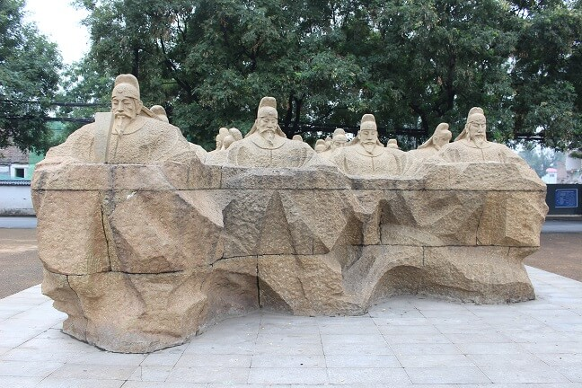
遗憾的是，正逢大明宫准备丝绸之路电影节。很多地方都在封闭整修，包括我们到的门。这也难怪，大明宫可是当初丝绸之路的东方圣殿。习主席最近一直在倡导一路一带，这是怎么着也绕不过大明宫的。下面的这张照片是在大明宫的墙外拍摄的，是不是仿佛一下子到了西域。
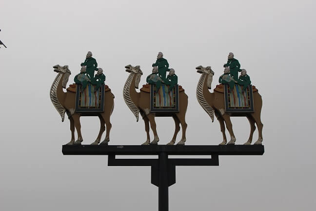
于是饶了个大圈，到前门进去。里面很空旷，像个大公园。景色尚可。曾经的辉煌不再，只留下了各种遗址。介绍着大唐曾经的辉煌。不过，不懂历史的人还是很难想象。当年的大明宫紫寰殿，只能通过这张照片来想象了。
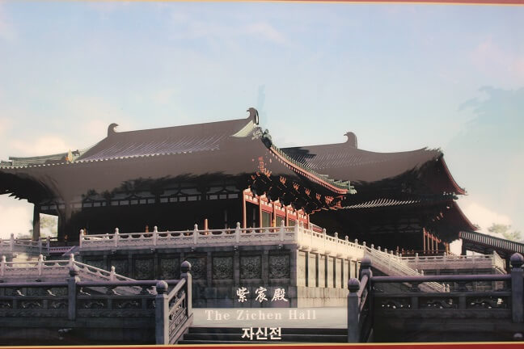
溜达了一会儿找到了收费区门口。买票的时候被告知有些地方不开放。再加上天已经开始下雨。于是决定不进去了。询问了下得知身后就是太液池。远远望去，水清草绿，烟雨蒙蒙。不输江南。印象中黄沙漫漫的西安竟有这样的美景，还是没想到的。
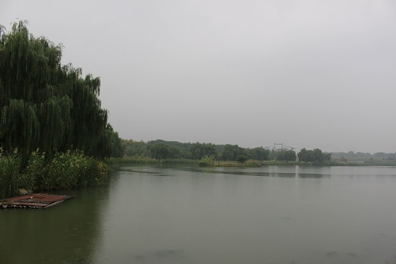
太液池旁边有人在钓鱼，看了会儿，雨下的渐渐大了起来。原路返回，找到了辆公交车，到了火车站。
到了永和豆浆，要了两杯豆浆，一份炸饺。边吃边打发时间。
三点半，到超市买了包面，两瓶水。一点大枣。进站候车。进去后发现，车站比较小，也比较乱。连坐着休息的地方都没有。好在离检票时间不远。
检票进站发现，要从一个很窄的甬道上去在下来。好在我行李不多。但行李多的旅客可就苦了。
上了火车，也宣告了此次旅游的正式结束。